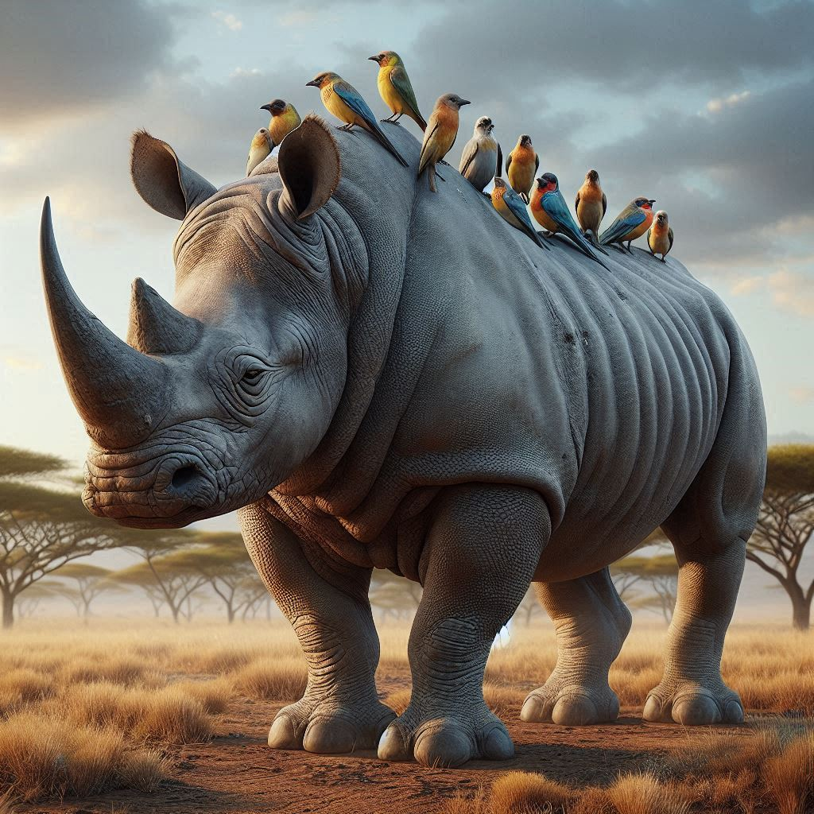

Quienes somos ?
- 23 animales que se han extinguido en los últimos 150 años
- 5 animales extintos: conoce sus características y las causas de su desaparición
- 8 animales ya extinguidos que nunca más volveremos a ver (y uno que "volvió de la muerte")
- Especies extintas: ¿qué son y cómo se llega a la desaparición total?
Somos una plataforma dedicada a la conservación de la biodiversidad y la protección de especies en peligro de extinción. Ofrecemos recursos educativos y juegos didácticos para concientizar sobre la importancia de preservar la vida silvestre. Encuentra más información y únete a nuestra misión para un futuro sostenible en nuestra sección informativa. Además, explora nuestros juegos interactivos aquí.
Mas informacion
-
¡Atención! La Tierra se encuentra en un momento crítico. La extinción de animales está ocurriendo a un ritmo alarmante, con más de 38.000 especies en peligro de desaparecer, lo que representa alrededor del 25% de todas las especies conocidas.
-
¿Qué podemos hacer?
En esta sección encontrarás información y recursos para comprender la gravedad de la situación y tomar medidas para proteger a nuestro planeta.
-
1. La crisis de extinción en cifras:
- 1 de cada 5 especies de animales se encuentra en peligro de extinción.
- Cada año se extinguen entre 18.000 y 55.000 especies, lo que equivale a 150 especies por día y 3 especies por hora.
-
Las principales amenazas para la biodiversidad son:
- Pérdida de hábitat: La destrucción de bosques, humedales y otros ecosistemas naturales es la principal causa de la extinción de animales.
- Caza y tráfico ilegal: Las especies silvestres son cazadas por su carne, piel, cuernos y otros productos, lo que lleva a su declive y extinción.
- Contaminación: Los productos químicos y contaminantes dañan los hábitats y envenenan a los animales.
- Cambio climático: El aumento de las temperaturas, el cambio en los patrones climáticos y el aumento del nivel del mar están alterando los ecosistemas y amenazando a las especies.
-
2. Ejemplos de animales en peligro de extinción:
- Panda gigante: El adorable panda gigante se encuentra en peligro crítico de extinción debido a la pérdida de su hábitat natural, el bambú.
- Tigre de Sumatra: El majestuoso tigre de Sumatra es la especie de tigre más rara del mundo, con solo unos 400 individuos en estado salvaje.
- Elefante africano: El elefante africano es el animal terrestre más grande del planeta, pero su población ha disminuido drásticamente debido a la caza furtiva y la pérdida de hábitat.
- Vaquita marina: La vaquita marina es la marsopa más pequeña del mundo y se encuentra en peligro crítico de extinción, con solo unos 10 individuos restantes.
- Rinoceronte de Java: El rinoceronte de Java es la especie de rinoceronte más rara del mundo, con solo unos 60 individuos en estado salvaje. 
-
3. ¿Qué podemos hacer como individuos?
- Reduce tu consumo de carne: La producción de carne es una de las principales causas de la deforestación y la pérdida de biodiversidad.
- Elige productos sostenibles: Busca productos que provengan de fuentes sostenibles y que no contribuyan a la destrucción del medio ambiente.
- Ahorra energía y agua: Reducir tu consumo de energía y agua ayuda a disminuir la contaminación y la presión sobre los recursos naturales.
- Recicla y reutiliza: Reciclar y reutilizar materiales reduce la cantidad de residuos que van a parar a los vertederos y ayuda a conservar los recursos naturales.
- No compres productos de animales salvajes: No compres productos de animales salvajes o sus derivados, como marfil, piel exótica o carne de animales en peligro de extinción.
- Apoya a organizaciones de conservación: Dona a organizaciones que trabajan para proteger a las especies en peligro de extinción y conservar la biodiversidad.
-
4. Acciones colectivas para proteger nuestro planeta:
- Firma peticiones: Únete a campañas para proteger especies en peligro de extinción y exigir políticas ambientales más fuertes.
- Contacta a tus representantes electos: Haz saber a tus representantes electos que te preocupa la extinción de animales y que apoyas políticas que protejan el medio ambiente.
- Participa en activismo ambiental: Únete a grupos ambientalistas y participa en acciones para proteger el medio ambiente, como limpiezas de playas, campañas de reforestación o protestas pacíficas.
-
5. Recursos para aprender más: